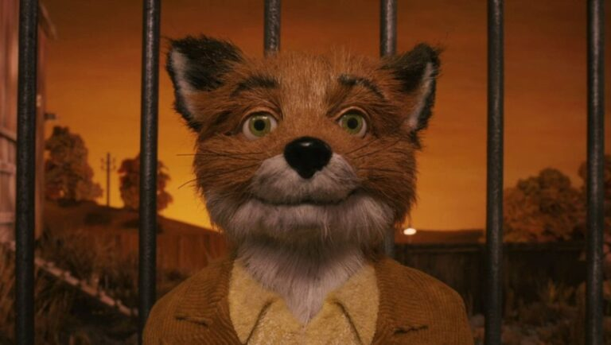
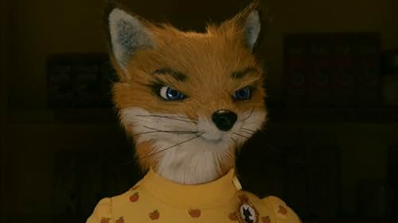
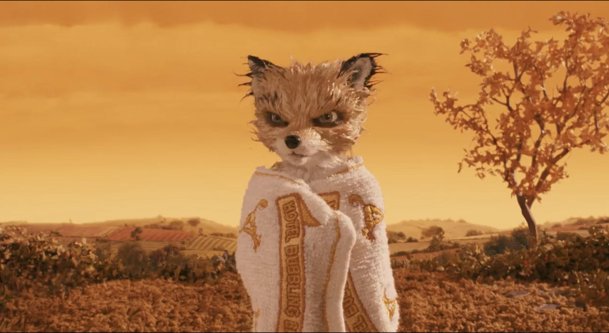
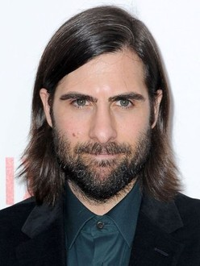
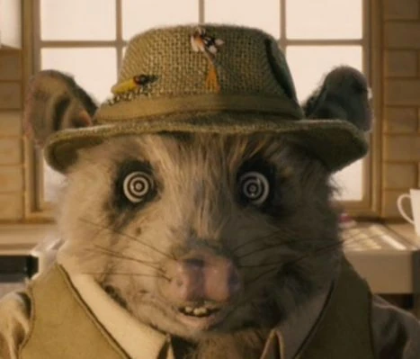
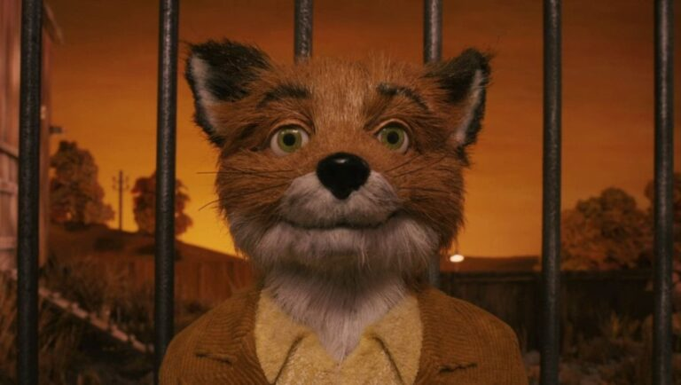
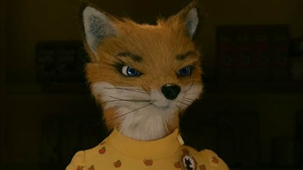
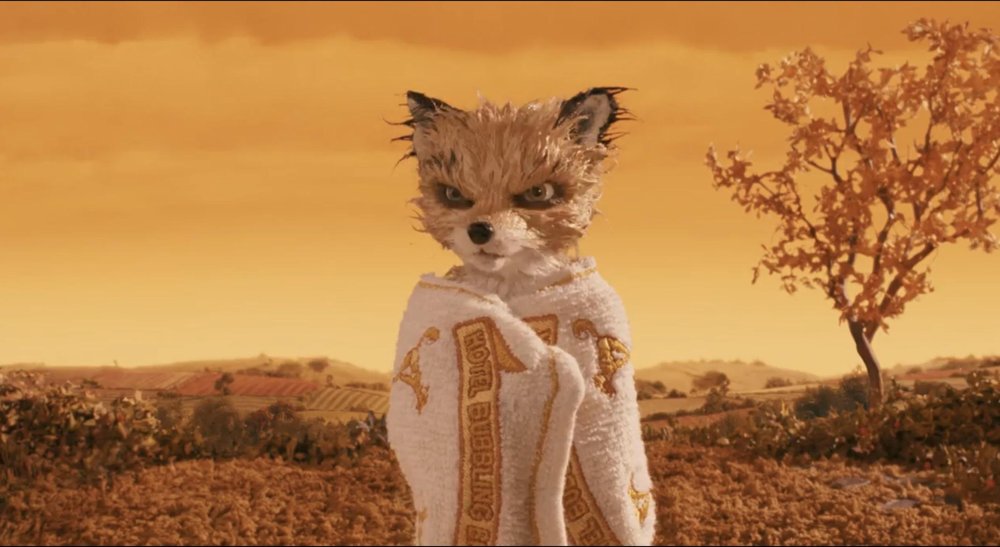
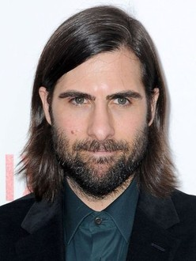
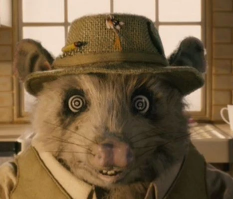

Cast

 George Clooney as Mr. Fox
George Clooney as Mr. Fox
 Meryl Streep as Mrs. Fox
  Jason Schwartzman as Ash Fox
 Wallace Wolodarsky as Kylie
"I don't want to live in a hole anymore." - Mr. Fox
Fantastic Mr. Fox is a 2009 stop-motion animated film directed by Wes Anderson, based on Roald Dahl's children's book of the same name. The film features the voices of George Clooney, Meryl Streep, and Jason Schwartzman, among others. It tells the story of Mr. Fox, who must outsmart three farmers to protect his family and friends.
The film is known for its unique visual style, blending traditional stop-motion animation with a whimsical narrative. It received critical acclaim for its humor, voice performances, and artistic direction.

George Clooney as Mr. Fox
 Meryl Streep as Mrs. Fox
  Jason Schwartzman as Ash Fox
 Wallace Wolodarsky as Kylie